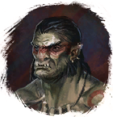

Кость Йоко
Предметы / Обмен
Открыть в интерактивной вики →
| Вес | 1 |
|---|---|
| Цена | 0 |
Описание
Окорок рогатого чемпиона  Йоко - лакомство
Йоко - лакомство  Доски.
Доски.
Йоко - лакомство 
Издирул Альти, у которого имеется доступ к огромному количествуДоски.| Окорок рогатого чемпиона Йоко — лакомство Изидрула Алти, у которого есть доступ к большому количеству досок. |
Рецепт
Обмен
Дроп
Применение
|
Как добыть
| Получаем за победу над: |